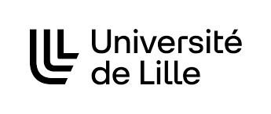

Formation
Passionné par l'informatique depuis mon plus jeune âge, il était évident pour moi de partir dans ce domaine.
Pour cela j'ai obtenu un Baccalauréat Général ce qui m'a permis d'intégrer le cursus du BUT Informatique
Éducation
BUT Informatique
2022 - Présent
Université de Lille, IUT A, Villeneuve d'Ascq
Parcours Réalisation d'applications : conception, développement, validation
- Réaliser un développement d'application
- Analyser un problème avec méthode (découpage en éléments algorithmiques simples, structures de données...)
- Faire des essais et évaluer leurs résultats en regard des spécifications
Baccalauréat Général
2019 - 2022
Lycée Gustave Eiffel, Armentières
Obtenu avec mention Bien et les spécialités Mathématiques et Numérique et sciences de l'informatique
Expérience Professionnelle
Alternant Développeur FullStack
Octobre 2023 - Août 2025
Domoti, Marquette-lez-Lille
Apprentissage des langages : SQL, C#, XML, JSON et des outils Microsoft
- Création de script SQL à la demande des clients (Avec SQL server)
- Je programmais de A à Z les procédures afin d'effectuer les extractions de données.
- Sécurisation d'Emails, bloquage d'injection de code
- Afin d'éviter le piratage lorsque les clients envoient des mails,
j'ai mis en place un programme C# permettant de supprimer le contenu HTML inutile.
- Afin d'éviter le piratage lorsque les clients envoient des mails,
- Gestion de projet (Du cahier des charges jusqu'au rendu de projet)
- Je programmais de A à Z les procédures afin d'effectuer les extractions de données.
Assistant rédactionnel
Janvier 2019
Département du Nord, section Éducation
- Chargé de rédaction des articles pour "monstagedetroisieme"
- Récupération des informations nécessaire aux articles auprès les personnes concernées